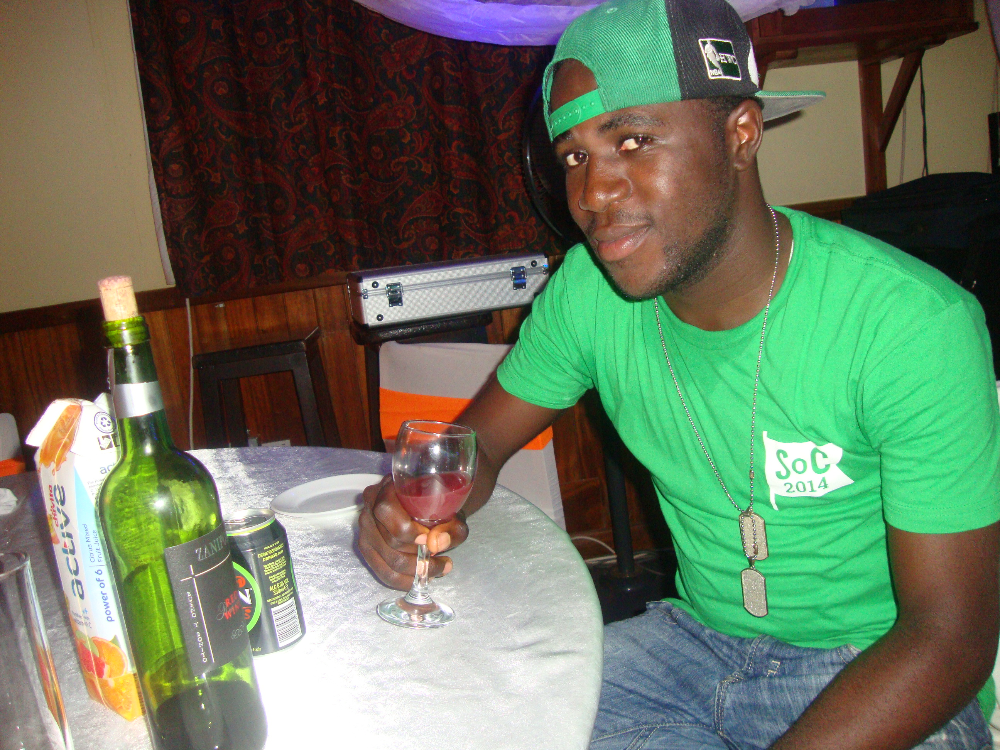
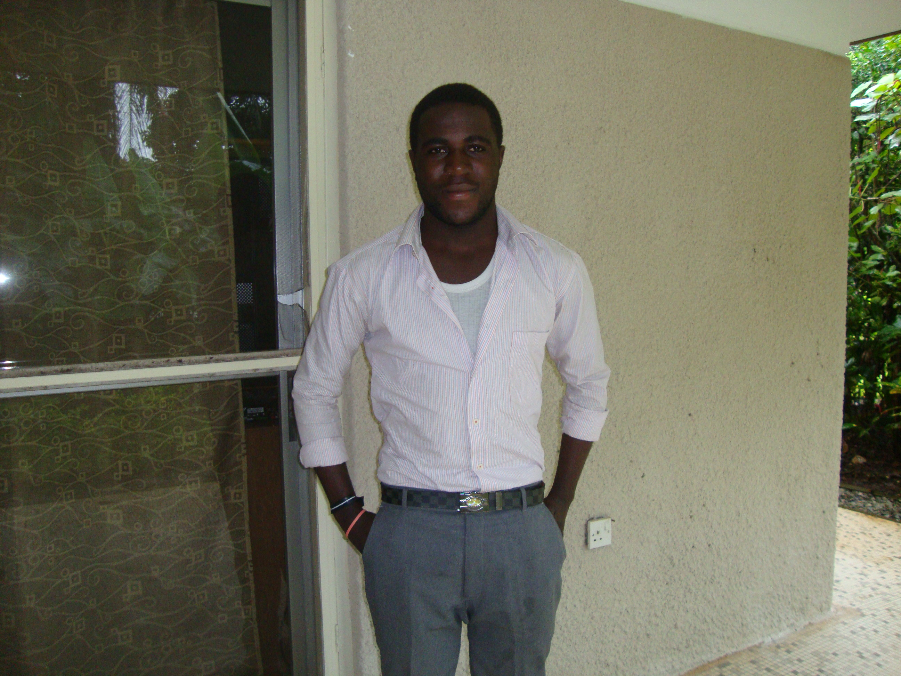

Welcome to the Generation where Entertainment is never enough
HOW TO USE THE BOLF BROWSER
Hello, here is the Broswer you have been looking for.
This Browser is done to ease your search of entertainment information and also to help you get
your Musics, Movies, games etc just by clicking a button which takes you the correct and current Website.
It is very easy to use.
How To do A Search
When you open the Brower, you will find a search Button at the center which searches for information you enter the entry on its left.
.
There is a dropdown next to the Entry. Here, you select the type of information you are look ing for.If your search doesnt see any information of that type on the internet,It searches google for the default.
Example: An individual searches "Faculty Of Engineering University of Buea"
He will still have his result but from google.
Meaning of Event

There are several events on the Browser. Each of Them being Clickable and gives you different inforamtions.
News
When you click on any of the two moving images above the search Button, they give the most recent Entertainment News from Africa and the World .
Music
On the Left, there is a row labeled Music. Each of the events stands for the path to the Best source of a type of Music as listed
in the following order.
Africa Music
Nigeria Music(Nijia)
Cameroon Music
Hiphop(Not Africa)
Movies
Next to the Lebel Music, there are Movies. Each of the events bello it stands for the path to the Best source of a type of Music as listed
in the following order.
Nollywood
Hollywood
Bollywood
Horos Movies

Funny Vidios
Next to the Lebel Movies, there is a label Funny Vidios. Each of the events below it stands for the path to the Best source of a type of Music as listed
in the following order.
Africa
American Funny
European
Fun for Kids
Games
Next to the Lebel Funny Vidios, there is a label Games. Each of the events below it stands for the path to the Best source of a type of Game as listed
in the following order.
Racing Game
War Games
Horo Games
Games for Kids
Sports
Next to the Lebel Games, there is a label Sports. Each of the events below it stands for the path to the Best source of a type of Music as listed
in the following order.
FootBall/Fifa
Basketball
Resling
General sports
Top Of Browser
At the top of the Browser, You there is and entry text used to displace the current url on Search.
On its right, there is a forward button to help you go back the lastly search website.
On the left of it is a back button which offers a reverse of the Forward.
.
Above all of them, there is an add Button which adds a new window when clicked.
There is a red button which closes the window.
Developers
Greater thanks Goes to our Teacher Mr Gatchau Damens for giving us this project.
It has helps most some of the people in this team to grow wider in their scope of Programming same as it has not affected other.
Njungle Nges Brian(www.ngesb.com,676023729)
Stephan Mukete Jr.(693943547)
Eta Dalton(672509736)
Arsene .....()
Thanks to everyone who help us out in way.
Done by Nges B